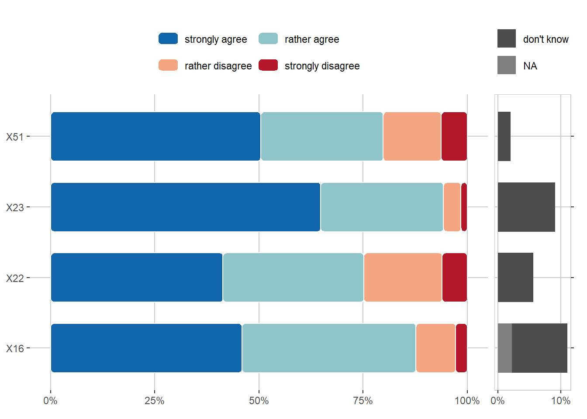

columns <- paste0("X", 38:52)
plot_agreement_overview(df, var_overview, columns, sort = TRUE)
The overviews are so far produced by the order of items in the survey. However, we plan to rearrange the items more by related topics and create overviews that way.
This plot compares the selected answer categories across different agreement items and sorts them based on how many people agree. For better visualization, the labels are (for now) replaced by the short variable id. It might make sense to include only response from one year in one such plot (because otherwise some respondents would appear multiple times, while others won’t). The option to filter for a specific year is already implemented.
columns <- paste0("X", 38:52)
plot_agreement_overview(df, var_overview, columns, sort = TRUE)
To look up the full statements that are referred to by the variable ids, we derive them here from our variable overview.
knitr::kable(var_overview[var_overview$var_id %in% columns, 1:2])| var_id | var_full |
|---|---|
| X38 | Research results should be in open access, i.e. freely available to the academic community and the general public. |
| X39 | Research papers should be openly available even before the official peer review process, i.e. before a thorough review of their content. |
| X40 | Authors should retain intellectual property rights to their published works, even at the cost of giving up some opportunities for free publication |
| X41 | Scholars should explain the results of their research to the general public in an understandable way. |
| X42 | Researchers should publish author’s versions of manuscripts on open online resources such as Zenodo, institutional repositories, etc. |
| X43 | Researchers should invest time in describing their experimental data with appropriate metadata so that the data can be easily found and reused. |
| X44 | Time should be invested in describing research methodology, tools, and experimental results in detail so that other researchers can reproduce them. |
| X45 | Experimental data should be published as openly as possible. |
| X46 | If software development is part of a research project, the source code should be published alongside the relevant scientific papers. |
| X47 | Researchers should always strive to ensure that their research serves a broad public purpose, regardless of the field of science in which they work. |
| X48 | The names of peer reviewers of research papers should be made public, regardless of whether their conclusion is positive or negative. |
| X49 | The texts of positive and negative peer reviews of research papers should be published alongside these papers. |
| X50 | Authors of research papers and peer reviewers should be able to communicate directly without intermediaries. |
| X51 | Higher education institutions should provide open access to their educational resources (textbooks, manuals, various digital tools, etc.) for everyone. |
| X52 | I can explain what “open science” is. |
Caution: X19 is phrased as an inverted item, while all others are not. This needs to be considered for interpretation
columns <- paste0("X", 15:23)
plot_agreement_overview(df, var_overview, columns)
knitr::kable(var_overview[var_overview$var_id %in% columns, 1:2])| var_id | var_full |
|---|---|
| X15 | Overall, the processes at my higher education institution are organised in a clear and transparent manner |
| X16 | The quality of educational services at my higher education institution is high |
| X17 | Researchers should publish all research results (both positive and negative) |
| X18 | All co-authors are fully responsible for the content of the publication, regardless of the amount of their contribution |
| X19 | Changes to experimental data after the end of the experiment are acceptable |
| X20 | It is necessary to indicate the authorship of all those who have contributed to the research without exception |
| X21 | Researchers should report any conflicts of interest when publishing research results and applying for funding |
| X22 | Students should openly publish the full texts of their diploma theses |
| X23 | Students must understand what constitutes inappropriate academic behavior and report it to the appropriate authorities |
columns <- paste0("X", 24:37)
plot_frequency_overview(df, var_overview, columns)
knitr::kable(var_overview[var_overview$var_id %in% columns, 1:2])| var_id | var_full |
|---|---|
| X24 | Using other author’s published papers and ideas without proper reference to the original source. |
| X25 | The author uses his own previous publications as part of a new work without proper acknowledgment or citation of the original. |
| X26 | Making up data or facts about a scientific activity, for example, a research experiment. |
| X27 | Selective citations to support one’s conclusions or to please editors, reviewers, colleagues, etc. |
| X28 | The author passes off other people’s academic achievements as his own. |
| X29 | A person attributes to himself or herself the authorship of a work (assignment, article, etc.) that he or she did not actually perform, but arranged for others to perform it for a fee or in another way. |
| X30 | Students help each other during exams or tests. |
| X31 | Students use cheat sheets, smartphones, or other means of cheating during exams or tests. |
| X32 | Students and teachers use unauthorized software (so-called “pirated software”). |
| X33 | Incitement to violate academic integrity. |
| X34 | The administration of the institution tolerates cases of academic dishonesty. |
| X35 | Falsely accusing a student or employee of misconduct or other violations. |
| X36 | Abuse of official position or authority to encourage academic dishonesty. |
| X37 | The university administration accuses and punishes whistleblowers of academic integrity violations. |
“Experimental data should be published as openly as possible.” (X45)
Data here is grouped by the survey year, therefore allowing quick visual comparisons. There is a plan to have more specific visualizations for developments over time.
plot_agreement(df, var_overview, "X45", group = "X64")
“Making up data or facts about a scientific activity, for example, a research experiment.” (X26)
Data here is filtered for the year 2023 and grouped by academic role (which is a variable that could benefit from merging some categories). The groups are sorted by the frequency they estimate. However, we could sort the groups also in some other way as desired.
plot_frequency(df, var_overview, "X26", group = "X8",
filter = "X64", filter_val = "2023", sort = TRUE)
Additionally to these plots, we can also produce large overview tables that would allow to investigate certain items, groups or categories more closely. However, these were left out for now due to their size. Visualizations will also be adapted and optimized (e.g., labelling of axes), but some issues at the moment are also caused by rendering that will be solved later.